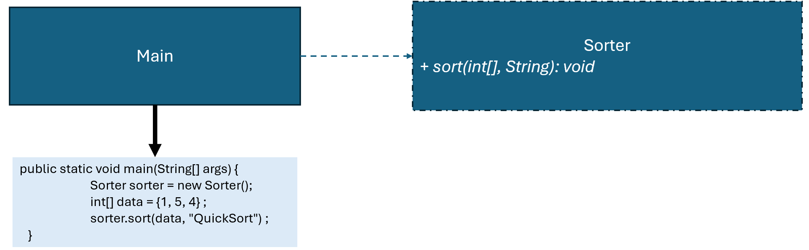

優點
缺點
總評
本次對話展現明顯的目標設定、系統規劃及協同編輯風格，且能將討論精煉成文字報告。學生具備主動規劃及優化設計的能力並能順暢與AI互動，但尚未抓住AI回答進行更深認知互動，亦缺乏後設認識和主動求證步驟。
程式一多起來override好礙眼能不寫嗎
這種紀要流程又要多種演算法要不乾脆把那個templatemethod也弄進來
abstract class SortStrategy {
public final void processSortStrategy(int[] data) {
sorttype();
sort(data);
System.out.println();
}
abstract void sorttype();
abstract void sort(int[] data);
}
class Swap {
public Swap() {
}
public static void swap(int[] data, int x, int y) {
int t = data[x];
data[x] = data[y];
data[y] = t;
}
}
class OutputArray {
public OutputArray() {
}
public static void output(int[] data) {
for (int i : data) {
System.out.print(i + " ");
}
}
}
class BubbleSort extends SortStrategy {
@Override
public void sorttype() {
System.out.println("Using Bubble Sort");
}
@Override
public void sort(int[] data) {
bubbleSort(data, data.length);
OutputArray.output(data);
}
private void bubbleSort(int[] data, int length) {
for (int i = 0; i < data.length; i++) {
for (int j = 1; j < data.length - i; j++) {
if (data[j - 1] > data[j])
Swap.swap(data, j - 1, j);
}
}
}
}
class MergeSort extends SortStrategy {
@Override
public void sorttype() {
System.out.println("Using Merge Sort");
}
@Override
void sort(int[] data) {
mergeSort(data, 0, data.length - 1);
OutputArray.output(data);
}
private void mergeSort(int[] arr, int left, int right) {
if (left < right) {
int middle = left + (right - left) / 2;
mergeSort(arr, left, middle);
mergeSort(arr, middle + 1, right);
merge(arr, left, middle, right);
}
}
private void merge(int[] arr, int left, int middle, int right) {
int[] L = java.util.Arrays.copyOfRange(arr, left, middle + 1);
int[] R = java.util.Arrays.copyOfRange(arr, middle + 1, right + 1);
int i = 0, j = 0, k = left;
while (i < L.length && j < R.length)
arr[k++] = (L[i] <= R[j]) ? L[i++] : R[j++];
while (i < L.length)
arr[k++] = L[i++];
while (j < R.length)
arr[k++] = R[j++];
}
}
class QuickSort extends SortStrategy {
@Override
public void sorttype() {
System.out.println("Using Quick Sort");
}
@Override
public void sort(int[] data) {
quickSort(data, 0, data.length - 1);
OutputArray.output(data);
}
private void quickSort(int[] data, int low, int high) {
if (low >= high)
return;
int left = low, right = high, pivot = data[low], i = low + 1;
while (i <= right) {
if (pivot > data[i])
Swap.swap(data, i++, left++);
else if (pivot < data[i])
Swap.swap(data, i, right--);
else i++;
}
quickSort(data, low, left - 1);
quickSort(data, right + 1, high);
}
}
public class Sorter {
private SortStrategy sortStrategy;
public Sorter() {
}
public void setSortStrategy(SortStrategy sortStrategy) { this.sortStrategy = sortStrategy; }
public void sort(int[] data) {
sortStrategy.processSortStrategy(data);
}
public static void main(String[] args) {
int[] data = { 2, 3, 1 };
Sorter p = new Sorter();
p.setSortStrategy(new BubbleSort());
p.sort(data);
p = new Sorter();
p.setSortStrategy(new MergeSort());
p.sort(data); // 顯示 "Using Merge Sort"
p = new Sorter();
p.setSortStrategy(new QuickSort());
p.sort(data); // 顯示 "Using Quick Sort"
}
}
!@#$報告
新設計有何優點?
這份程式一開始我是用策略模式來做的，目的是想讓排序演算法可以自由切換。每個排序演算法（像 BubbleSort、MergeSort、QuickSort）都實作了 SortStrategy，而 Sorter 只負責呼叫策略，這樣新增或替換排序方式就不用改別的程式碼。
後來因為每個排序除了排序本身，還需要印出排序方式跟輸出結果，如果都寫在每個策略裡，會有很多重複程式碼。這時我加了 Template Method，也就是在 SortStrategy 裡寫 processSortStrategy 固定流程：先印排序方式、再排序、最後輸出。這樣每個策略只專注在演算法本身，不用管流程細節。
整體來說，就是用策略模式控制「做什麼排序」，用 Template Method 控制「排序的流程順序」，兩者搭配讓程式既彈性又乾淨。!@#$
請檢視程式碼介面是否違反 Strategy 模式，並撰寫報告，討論新設計有何優點?

int[] data = {2, 3, 1} ;
1. Sorter p = new Sorter( );
p.setSortStrategy( new BubbleSort() ) ;
p.sort(data); //顯示 "Using Bubble Sort"
2. Sorter p = new Sorter( );
p.setSortStrategy( new MergeSort() ) ;
p.sort(data ); //顯示 "Using Merge Sort"
3. Sorter p = new Sorter( );
p.setSortStrategy( new QuickSort() ) ;
p.sort(data ); //顯示 "Using Quick Sort"